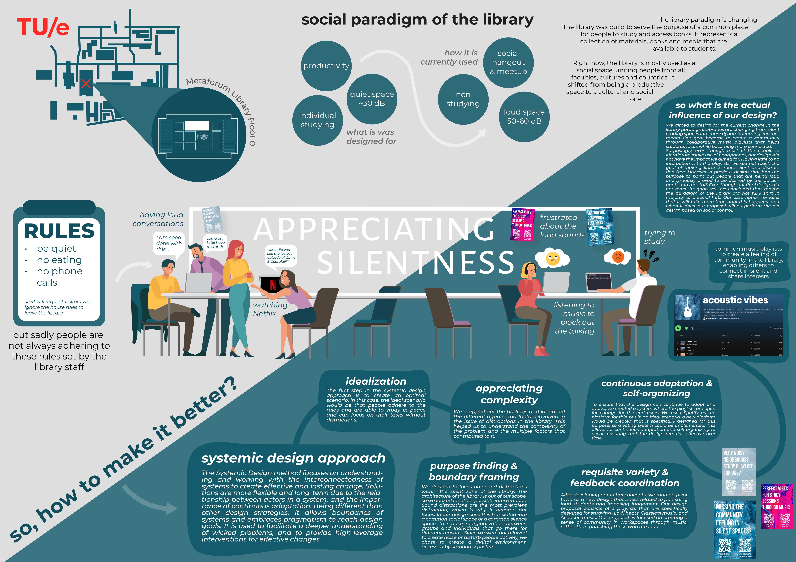
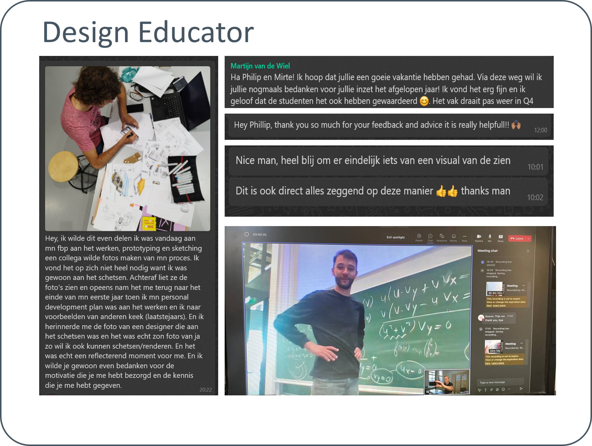

I am an Industrial design master’s student, who is driven to work in the automotive industry as a designer. I have a broad range of experience in automotive design, product design, and furniture design. My experience and training in design sketching and 3D modeling allow me to iterate rapidly. My knowledge of storytelling, product manufacturing, user experience, and ergonomics results in an efficient design process and a concept proposal based on the user and stakeholder's requirements.
.png)
Manufacturers should explore modularity since it can offer product flexibility, repairability, and customization. Product manufacturers should be regulated to reduce their environmental footprint, E-waste generation, and waste generation. It is not within the power of the consumer to change a systemic problem, and manufacturers should be forced into compliance with the standardization of materials, connectors, and perhaps even material choice. As a designer, I believe this will happen due to the environmental effects of mass overconsumption and ecological neglect. Designers should prepare for this regulation by learning about sustainable materials, modularity, and the circular economy.
Many users are not adequately considered. I come from a union family, where I was taught the importance of healthy workplaces. During my internship at EDAG, I talked to many delivery drivers and considered changing my thesis topic completely. I encountered knee and hip injuries, negative stigmas surrounding delivery drivers, and exceeding work pressure. I was intrigued by how design can influence the workspace mentally and physically and would like to explore these topics further in my professional career.
The Centre of Expertise for Challenge-Based Learning became a formative experience for me. In a
group of
four rookie entrepreneurs, we were challenged to push the boundaries of our projects and
mindsets. When
we started the course, we tried fixing engineering and design problems. By the end, we shifted
from
bicycles to hydroponics and landed on an augmented reality application for language learning.
Throughout the program, I significantly improved my presentation skills and acquired the ability
to
assess whether a product possessed a viable market fit. Additionally, I delved into the
exploration of
value networks and discovered how designers can play a more active role in the overall market
success of
a product.
Nevertheless, the process was a valuable learning experience, as it taught us to adapt and
iterate based
on feedback and market demands.
 >
>
For this course, my group was challenged by PHILIPS to improve the user experience for hospital
patients
waiting for treatment. We focused on reducing discomfort and anxiety by creating a calming and
interactive waiting room environment. My responsibilities included conducting expert interviews,
ideation, and prototyping.
The challenge was to reduce anger in patients in the waiting room. In the United States, people
can walk
into the hospital waiting room. When one's situation is more severe, they can be treated faster,
while
others have to wait longer. This difference in waiting time can lead to patient frustration,
ranging
from annoyance to violence.
Our concept was that the patients required segmentation based on the severity of their medical
condition. The waiting room was segmented into four so that the less urgent color codes could
not see
the desk while the urgent patients could.
 >
>
In the course 'Data Enabled Design,' I worked with four people to create MINEBIRD - a bird-shaped device that communicates air quality in an engaging and informative way. My role in the project involved ideation, CAD modeling, and rapid prototyping of various components. We utilized sensors to gather air quality data, which was then communicated to the user through the bird's movement and LED lights. The project allowed us to explore the intersection of data and design and create an innovative solution that raises awareness about air quality.

During the pandemic, I wanted to have a course in my comfort zone and improve my hard skills.
During the
course, I became driven to become a teacher assistant since this would allow learning about
education
and sketching and help finance my study.
During a guest lecture by Luciano Bove, I also established a connection and became his student.
I learned about art history, mood boards, expression, and visual communication. I mixed my passion for Blender 3D, adobe Photoshop and worked with a group of four students.
 >
>
 >
>
Master project 2.1: vibrational feedforward for rear-facing passengers During my Master project 2.1, I worked on implementing vibrational feedforward for rear-facing passengers in cars. This involved researching and developing a system that would provide haptic feedback to passengers in the event of an impending collision, improving their awareness and safety while seated facing the vehicle's rear.
> >In a group of four students, we conducted constructive design research on haptic feedback in automated vehicle car seats. We aimed to explore how haptic feedback can enhance the user experience in automated vehicle car seats. I learned that choosing a research method should be directly linked to the Research topic and possibilities. When the method suits the topic, the study will be elevated by the I found that a lab approach would be far more suitable for future automated vehicle testing. Since I was interested in continuing to work in this field, I decided to use virtual reality in my M2.1 project, leaning more toward quantitative data.
>In the course Interactive Materiality, we explored the relationship between materials and interaction design, and how they can be combined to create novel and engaging user experiences. As a group of students, we worked on the THOM project, which aimed to design new materiality through the combination of interaction gestalt, materials, and actuators. We investigated the role of haptic and tactile feedback in creating meaningful interactions and explored different materials and actuation methods to achieve our design goals. Our project focused on the design of an interactive surface that would respond to user inputs with a variety of visual and haptic feedback, and we used our knowledge of material properties and interaction design to create a unique and compelling user experience.
>When I met Luciano Luciano Bove, I wanted to join his one-on-one lectures on automotive design sketching. Not only was it enjoyable and informative, but I also implemented his insights into my student team design. It made me more confident in my abilities, and I learned to work faster. Also, shading organic shapes opened new possibilities for expressing and exploring shapes.
>Chief automotive designer responsible for the exterior and interior design of a sustainable electric car developed by the TU/Ecomotive student team, achieving CO2 neutrality. Developed the packaging, exterior, and interior design leading a team of 3 design students from concept to production in one year. As chief design I was responsible for managing the design team, creating concept sketches, 3D concept models and end responsible for the quality of the interior and exterior of the car. The design of the car is just the the physical manifestation of the challenges, successes, setbacks and growth we went through. What I am even more proud of is the positive, rewarding and creative team we have formed together.
In a group of four students, we developed an AI-powered web navigation tool to assist students in finding relevant information online. Our goal was to explore design innovation strategies for developing helpful and intuitive web-based tools.
 >
>
Design sketching is one of my biggest passions, and I had the amazing opportunity to assist Martijn van der Wiel's classes for a year. Assisting his classes allowed me to improve my own design sketching abilities, while also learning how to teach others. It was truly an enriching experience, and I learned a lot from it. Teaching others how to sketch has allowed me to gain a deeper understanding of the sketching process and how to effectively communicate ideas through sketches.
 >
>
In the course 'Data Enabled Design', I worked in a group of four people to create MINEBIRD - a bird-shaped device that communicates air quality in an engaging and informative way. My role in the project involved ideation, CAD modeling, and rapid prototyping of various components. We utilized sensors to gather air quality data, which was then communicated to the user through the bird's movement and LED lights. The project allowed us to explore the intersection of data and design, and create a solution that raises awareness about air quality in an innovative way.
 >
>
Within Ebusco I wanted to perform user-centred design, for which I interview people on the street and in questionnaires. This lead to few oppertunities, for which I designed a light-emitting ceiling and angled chairs to increase the presence of windows in the field of view. I decided to use Unity 3D to improve the audit process of Ebusco since I noticed that the current process was highly labour intensive. I completed unity certificates and created a web UI, along with design proposals to improve the atmosphere on the bus. I developed my compitencies in implementing rea-time graphics, working outside of the desogn brief, and user studies.
In this course, I worked in a group of 4 students to address the issue of sound disruptions at the library. We conducted user research and identified pain points, then worked to design a solution that would reduce noise levels while maintaining a comfortable and welcoming environment. My role in the project involved literature research, ideation and presentating.
>
I approached the EDAG group to explore sustainability within the commercial vehicle market. By combining
the expert knowledge and experience from EDAG Helmond, my experience from the research design
development track, my practical skills from my bachelor, my passion for automotive design, and my
experience from being part of the TU/Ecomotive student team, I wish to end my academic career by
combining my passion, knowledge, and enthusiasm into a final master project.
In this project, we researched the context of commercial vehicles in urban zones regarding the
electrification and circularity potential to maximize sustainability in a financially viable method.
The vehicle is designed to perform in a product service system and maximize its lifespan in a
financially viable method. This shift to PSS emphasizes resource optimization, reduced environmental
impact, and improved economic performance. This is done by considering the product hierarchy, segment,
and customization service.
The topic of designing a versatile electric vehicle turned out to be more extensive than I initially
anticipated. I encountered some challenges along the way and sometimes felt a bit stuck. Due to time
constraints, I couldn’t evaluate the design as thoroughly as I had hoped.
I am grateful for the opportunity to collaborate with Wouter and Richard, whose expertise and insights
were truly inspiring. Their contributions helped shape the design in meaningful ways. Throughout the
project, I found the circular economy concept particularly inspiring. Learning about it and reading
about its principles was a valuable experience, even though I faced some difficulty in implementing
those ideas.
Overall, I'm proud of the progress in developing a vehicle concept that aligns with the needs and
aspirations of our target users. The project has taught me essential lessons about prioritization,
adaptability, and the power of collaboration. I look forward to applying the knowledge I gained to
future endeavours and remain enthusiastic about the circular economy concept.


I will create my own design studio as a part-time business, because I want to work on shorter and more diverse projects, and I believe that my hardskills, user centred process and innovation method can help me grow in this field. Starting my own business will allow me to choose projects that align with my interests and abilities. It will allow me to work on various design projects, including digital design, graphic design, and product design. I will be able to slowly build up my repetaire and tasks. This will enable me to improve my skills and expertise by constantly engaging with different clients and industries. Working on shorter, more diverse projects will expose me to new challenges, technologies, and design trends, contributing to my professional growth and development.
I will become a teacher for design sketching classes because I have a passion for design and want to share my knowledge and skills with others. Teaching design sketching will allow me to inspire and empower future designers. Because I have a strong foundation in design sketching and enjoy helping others develop their sketching abilities, becoming a teacher will allow me to impact students' creative journeys. I found learning from Martijn van der Wiel inspiring and enjoyed being a teacher assistant. Besides, Teaching requires a deep understanding of the subject, pushing me to continuously improve with the latest design techniques and trends. It will also allow me to learn from my students' perspectives and approaches.
